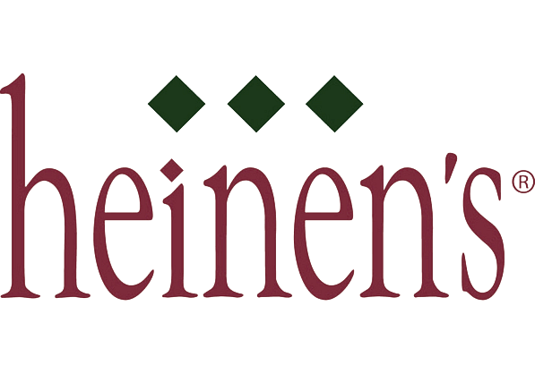

My name is Luke, and I am a passionate, life long learner who does challenging things just for the fun of it. I
love to push myself and others to meet their true potential. My goal is to make as big of an impact on the
advancement in computer technology as I can.
üßë‚Äçüíº Work History
⬇
I spent my 2023 Summer (May-August 2023) working at Lincoln Electric Additive Solutions. We worked and learned
aside industry professionals in mechanical, electrical, software, and welding engineering. We learned and went
through the process of additive manufacturing all the way from producing a CAD model in SolidWorks to printing
it with ABB IRB4600 robot. We also got to go through some weld training, but I mainly spent my time learning
about their complex slicing software SculptPrint. The head of software took me through the process of
completely building the software from scratch and working with the huge code base. I also learned OpenGL and
got incite into how it was used to render 3D and 2D graphics in the software. As a final project, I created a
Windows application with C++ and OpenGL to allow my co-intern to view a 3D representation of his .ply files by
being able to zoom in and out, and pan around the model.

⬇
From June-September 2023, at Heinen's Grocery Store I cut and organized strawberries, pineapple, cantaloupe,
watermelon, and honeydew, as well as lifted and dumped 50 pound boxes of oranges and grapefruits to prepare
juice to sell. I completely took apart the juice machine to clean every inch in 4 steps and maintained the
cleanliness of the area by mopping, scrubbing, and putting the cardboard in the baler. I also Labeled the date
on everything produced and kept track of where it went and how much I made on paper for other coworkers
convenience. Made peanut, almond, and cashew butter weekly, and took it to place out on the floor. Kept track
of dates so I knew how long to keep the fruit I cut in the cooler, and figured out what days shipments came in
so I would know what to work on. If I finished my objectives early, my job would be to scout the isles in
produce to see what needed to be pulled forward/stocked. I had to memorize the layout of the entire cooler and
backroom so I could find the products to put out myself. When I was out on the floor I also greeted customers
and took them directly to where they wanted to go if they needed it; finishing up the day by taking down the
required produce and storing it in the cooler, and sweeping up the floor around the produce area.
From August-November 2022, I Collaborated with a professor/NASA Astrophysicist at The Ohio State University to
create a series of games using the Unity physics engine. The goal was to teach physics concepts such as
kinematic equations to younger audience. The project was put on hold, but plans are in place to potentially fund
the project in the future!